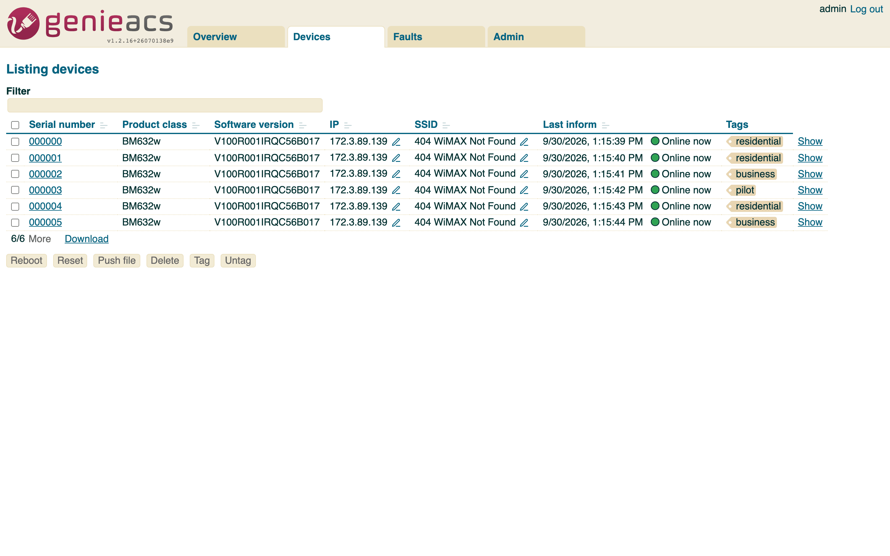

genieacs-container¶


genieacs-container is a Docker image and a Helm chart for GenieACS, the open-source TR-069 ACS that manages routers, ONTs and other CPE devices. GenieACS itself ships no container. This image runs its four services in one container, for amd64 and arm64, with MongoDB beside it: on one host with Docker Compose, or on Kubernetes with the Helm chart. It packages GenieACS 1.2.16 and does not change it.
This address is also the Helm chart repository: helm repo add genieacs https://geiserx.github.io/genieacs-container.
-
One file,
docker compose up -d, and the GenieACS console is on port 3000 in about a minute. -
Point a CPE, or the bundled simulator, at port 7547 and watch it appear under Devices.
-
The four services, the simulator and MCP profiles, extension scripts and the logs.
-
Every port, volume and environment variable, and the chart values that matter.
What it looks like¶
The console is upstream GenieACS 1.2.16, served by image 1.2.16.6. The devices in these screenshots are the bundled simulator (--profile testing), so you can see the same thing without hardware.



What is in the image¶
- The four GenieACS services in one container, under supervisord:
genieacs-cwmpon 7547 (the ACS URL devices inform to),genieacs-nbion 7557 (the REST API),genieacs-fson 7567 (the file server) andgenieacs-uion 3000 (the console). - GenieACS built from the upstream
v1.2.16tag on Node 24, on Debian bookworm-slim. The image tag is the upstream version plus a build number:1.2.16.6. - Logs rotated for you: each service writes its own file under
/var/log/genieacs, and cron runs logrotate daily, 30 days kept, compressed. - The GenieACS processes run as the unprivileged
genieacsuser (uid 999). Root is used once, to start cron, then dropped withgosu. - MongoDB is not in the image. Compose starts
mongo:9.0.4beside it; the chart bundles a MongoDB subchart for evaluation or takes your own.
How it runs¶
flowchart LR
CPE[Routers, ONTs, the simulator]
OPS[Scripts, genieacs-mcp, genieacs-ha, genieacs-ansible]
BR[Browser]
subgraph image [drumsergio/genieacs]
CWMP[cwmp :7547]
NBI[nbi :7557]
FS[fs :7567]
UI[ui :3000]
end
DB[(MongoDB)]
CPE -->|inform| CWMP
CPE -->|download| FS
OPS --> NBI
BR --> UI
CWMP --> DB
NBI --> DB
FS --> DB
UI --> DB- On one host:
docker-compose.ymlruns the image and MongoDB on a private network, exposes the four ports, and keeps two optional services behind profiles: the simulator (--profile testing) and the MCP server (--profile mcp). - On Kubernetes: the chart makes one Deployment, one Service per port, a PersistentVolumeClaim for extension scripts, and, when you turn them on, an Ingress or a Gateway API HTTPRoute for the console and a PodDisruptionBudget. MongoDB comes from the bundled subchart, or from your own instance through
externalMongodb.urlor a Kubernetes Secret. See Getting started and How it works. - Health: a Compose healthcheck on port 3000, and liveness and readiness probes in the chart.
- Upgrades: the tag moves when upstream GenieACS moves. Change the pin,
docker compose up -dorhelm upgrade, and the data in MongoDB stays. The changelog lists every image and chart release.
What it does not do¶
- It does not change GenieACS. Provisions, presets, virtual parameters and the UI are upstream's; the GenieACS documentation covers them.
- It does not terminate TLS. Put a reverse proxy, an Ingress or an HTTPRoute in front of the console and the CWMP port before exposing them.
- The bundled MongoDB subchart is for evaluation. Production runs MongoDB separately and points the chart at it.
- It runs one GenieACS replica by default.
Security¶
- Set your own
GENIEACS_UI_JWT_SECRETwithopenssl rand -hex 32. Neither the compose file nor the chart has a default, and both refuse to start without one; the chart also refuses placeholders such aschangemeand takes the secret from an existing Kubernetes Secret throughuiJwtSecret.existingSecret. - Turn on MongoDB authentication. The compose file has the lines commented; the chart has
mongodb.auth.enabled. - In the chart, keep credentials out of
values.yaml:externalMongodb.existingSecretfor the connection string,uiJwtSecret.existingSecretfor the UI secret,envFromorextraEnvVarsfor the rest. See Configuration. - The pod starts as root for cron and drops every capability except
SETUIDandSETGID; the GenieACS processes run as uid 999. - To report a security problem, follow the security policy and do not open a public issue.
Getting help¶
- If something is broken, read Troubleshooting, then open an issue with the details it lists.
- The changelog lists what changed between releases.
- For GenieACS itself (provisions, data models, device quirks), the GenieACS documentation and the GenieACS forum are the places.
- The Ansible collection, the MCP server, the Home Assistant integration and the simulator are on Related projects.
- To build the image or send a fix, read Development.
License¶
genieacs-container (the Dockerfile, the chart and the scripts) is released under the GPL-3.0-or-later license. GenieACS, which the image packages, is AGPL-3.0.